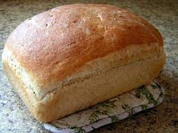

Homemade Bread

Description
There is nothing more comforting than fresh baked bread, straight out of the oven.
Enjoy this bread with some vegan butter and a hot bowl of soup for a satisfying meal.
This recipe is adapted from the recipe found on the back of the Gold Medal Bread Flour bag.
Ingredients
- 6-7 cups bread flour
- 3 tablespoons sugar
- 1 tablespoon salt
- 2 tablespoons olive oil
- 4 1/2 teaspoons regular or quick active dry yeast
- 2 1/4 cups very warm water
Directions
- In a large bowl, stir 3 1/2 cups of the flour, the sugar, salt, oil, and yeast until well mixed. Add warm water. Beat with electric mixer on low speed 1 minute, scraping bowl frequently. Beat on medium speed 1 minute, scraping bowl frequently. Stir in enough remaining flour, 1 cup at a time, to make dough easy to handle.
- Place dough on lightly floured surface. Knead about 10 minutes or until dough is smooth and springy. Grease large bowl. Place dough in bowl, turning to grease on all sides. Cover bowl loosely with plastic wrap and let rise in warm place 40-60 minutes or until dough has doubled in size. Dough is ready if indentation remains when touched.
- Grease bottoms and sides of 2 loaf pans.
- Gently push fist into dough to deflate. Divide dough in half and place each half into loaf pans, stretching to shape dough into the pans. Cover loosely with plastic wrap and let rise in warm place 35-50 minutes or until dough has doubled in size.
- Heat oven to 425 degrees F.
- Bake 25-30 minutes or until loaves are a deep golden brown. Remove pans to wire rack to cool.
- Thump the loaf, it should sound hollow.
- Enjoy!
Makes 2 loaves
Home